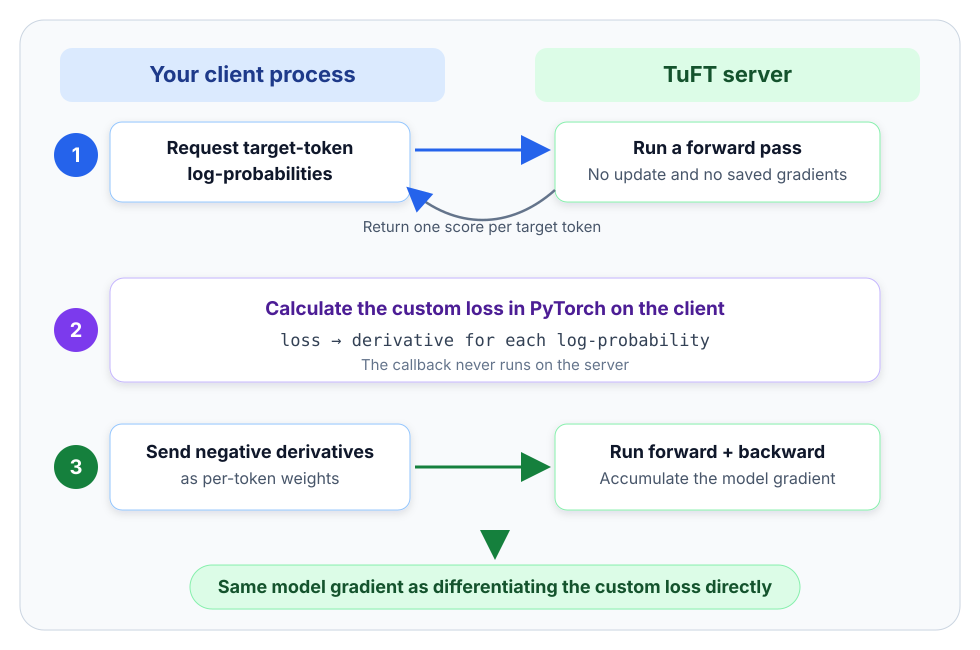

自定义损失¶
使用 Tinker SDK 的 forward_backward_custom 方法，可以把 TuFT 的训练损失写成一个普通的 PyTorch 函数——例如把直接偏好优化（DPO）与负对数似然（NLL）组合起来。自定义损失同时支持两种训练后端（hf 与 fsdp）。你的函数只在客户端进程中运行；服务器只执行自己内置的损失。
def my_loss(data: list[types.Datum], logprobs_list: list[torch.Tensor]):
# 把逐 token 对数概率组合成一个可微的标量。
loss = ...
# 指标必须是普通的 float，会随训练结果一并返回。
return loss, {"my_metric:sum": loss.item()}
training_client.forward_backward_custom(data, my_loss, loss_type_input="logprobs")
您将学到¶
什么时候该用
forward_backward_custom，而不是内置的loss_fn一次自定义损失调用中，客户端和服务器各做了什么
支持哪些输入，以及返回的分数如何与每个 datum 对齐
两个可直接运行的示例：监督微调，以及 DPO + NLL
运行时开销、常见错误，以及自定义步骤有何不同
目录¶
何时使用自定义损失¶
TuFT 内置五个服务器端损失函数——cross_entropy、importance_sampling、ppo、cispo 和 dro——在 forward_backward(data, loss_fn=...) 中按名称选用。服务器只接受这五个名称，因此客户端无法在共享基础设施上运行任意 Python 代码。
当你的目标函数是逐 token 目标对数概率的可微函数、却不在这五个之列时，就该用 forward_backward_custom 了。典型场景：
偏好类损失，例如比较 chosen 与 rejected 回复的 DPO。
组合损失，例如 DPO 加上带权 NLL，或再加一个策略/参考模型稳定项。
研究新损失时的快速迭代，无需改动服务器。
如果你的目标函数恰好是某个内置损失，请优先用 forward_backward：它每步能省下一次前向计算（详见下文）。
前置要求
tinker ≥ 0.25（TuFT 锁定的 SDK 版本），且客户端装有 torch。自定义回调只在你自己的进程中运行——TuFT 服务器永远不会导入或执行客户端的 Python 代码，也没有新增任何服务器端损失名称。
自定义损失的工作原理¶
对数概率是模型给目标 token 打出的分数，以对数刻度表示。梯度描述模型中某个值发生变化时，损失会如何随之变化。TuFT 靠这两样东西，就能在不把你的 Python 函数发给服务器的前提下，用你的损失来训练。
{kind=link}

客户端在两遍服务器计算之间完成自定义损失的计算。¶
服务器为每个目标 token 打分并返回这些对数概率。这一遍不更新模型，也不保存梯度。
你的 PyTorch 回调把这些分数组合成一个损失。PyTorch 会算出损失对每个返回分数的变化率。
客户端把这些值作为 token 权重发回。服务器对同一批数据再打一遍分并执行反向传播，从而累积出自定义损失的模型梯度。
下面解释为什么最后一步等价于直接用你的损失训练。设 \(\theta\) 为全部模型参数，\(\ell_i(\theta)\) 为目标 token \(i\) 的对数概率。你的回调把这些值组合成自定义损失 \(C\)。在客户端上，PyTorch 为每个 token 计算一个导数：
\(g_i\) 表示 token \(i\) 的对数概率发生微小变化时，自定义损失会变化多少。客户端把 \(w_i = -g_i\) 发给服务器。服务器把每个权重当作固定常数，计算辅助损失：
服务器对 \(H\) 关于模型参数求导时，两个负号相互抵消：
最后一个等号正是链式法则：每个 token 以 \(g_i\) 影响自定义损失，每个模型参数又以 \(\nabla_\theta \ell_i\) 影响该 token；把这些路径加总，得到的就是自定义损失对参数的梯度。\(H\) 与 \(C\) 的数值不必相等；优化器用的是两者的参数梯度，而它们是一致的。
这个等价性要求两遍服务器计算使用同一组模型参数。正常的串行用法天然满足：等 forward_backward_custom 完成后，再调用 optim_step。
监督微调示例¶
可在任何 TuFT 服务器（HF 或 FSDP 后端）上运行——先按快速开始启动一台服务器，然后：
import tinker
import torch
from tinker import types
service_client = tinker.ServiceClient(base_url="http://localhost:10610", api_key="local-dev-key")
base_model = service_client.get_server_capabilities().supported_models[0].model_name
training_client = service_client.create_lora_training_client(
base_model=base_model, rank=8, train_unembed=False
)
tokenizer = training_client.get_tokenizer()
def make_datum(prompt: str, completion: str) -> types.Datum:
# 特殊 token 只加一次，放在整条序列的开头。
prompt_tokens = tokenizer.encode(prompt, add_special_tokens=True)
completion_tokens = tokenizer.encode(completion, add_special_tokens=False)
tokens = prompt_tokens + completion_tokens
# 整体右移一位：每个输入位置预测下一个目标 token。
# 权重为 0 时忽略提示词 token，为 1 时在补全 token 上训练。
weights = [0.0] * (len(prompt_tokens) - 1) + [1.0] * len(completion_tokens)
return types.Datum(
model_input=types.ModelInput.from_ints(tokens[:-1]),
loss_fn_inputs={
"target_tokens": types.TensorData(data=tokens[1:], dtype="int64"),
"weights": types.TensorData(data=weights, dtype="float32"),
},
)
data = [
make_datum("English: hello world\nPig Latin:", " ello-hay orld-way\n"),
make_datum("English: banana split\nPig Latin:", " anana-bay plit-say\n"),
]
def sft_loss(data: list[types.Datum], logprobs_list: list[torch.Tensor]):
"""先算每个样本回复 token 的平均 NLL，再取批次均值。"""
per_example_nlls = []
for datum, logprobs in zip(data, logprobs_list, strict=True):
# 复用 datum 的权重作为回复 token 的 0/1 掩码。
weights = datum.loss_fn_inputs["weights"].to_torch()
# 对每条回复单独归一化，避免长回复主导整个批次。
response_token_count = weights.sum().clamp_min(1)
per_example_nlls.append(-(logprobs * weights).sum() / response_token_count)
# 无论回复长短，每个样本的权重相同。
loss = torch.stack(per_example_nlls).mean()
return loss, {"sft_nll:mean": loss.item()}
for _ in range(10):
# 先为该批次累积梯度，再一次性更新 LoRA 参数。
result = training_client.forward_backward_custom(data, sft_loss).result()
training_client.optim_step(types.AdamParams(learning_rate=1e-4)).result()
print(result.metrics["sft_nll:mean"])
回调按顺序收到与 data[i] 一一对应的 logprobs_list[i]，每个都是长度为 len(data[i].model_input) 的一维 float32 张量——logprobs_list[i][t] 是当前模型在位置 t 上赋予 target_tokens[t] 的对数概率。你返回的指标字典会与服务器的辅助损失指标一起合并进 result.metrics。
DPO + NLL 示例¶
直接偏好优化（DPO）训练模型给 chosen 回复打出高于 rejected 回复的分数。偏好项的定义出自 DPO 原始论文。Open Character Training 在其基础上组合了 chosen 回复的平均负对数似然（NLL）和一个小的逐 token 稳定项。在 DPO 上叠加 chosen NLL 的做法也见于 Regularized Preference Optimization。
对每条回复，示例先在回复 token 上对策略与参考模型的对数概率之差求和；DPO 在每对 chosen/rejected 内部比较这两个和。完整的批次损失为：
L_proxy 是采样回复 token 上策略/参考对数比值的均方。Open Character Training 的代码用它充当轻量的 KL 散度代理。它并不是全词表上的精确 KL——仅凭目标 token 的对数概率算不出后者。
datum 按 (chosen, rejected) 的顺序排列，并在第一次优化器更新之前一次性取得参考对数概率：
import torch.nn.functional as F
# 相邻的两个 datum 共享同一提示词，chosen 回复必须在前。
# make_datum 给提示词 token 权重 0.0，回复 token 权重 1.0。
# data = [chosen_0, rejected_0, chosen_1, rejected_1, ...]
# 保存初始策略的快照。策略训练期间这些张量保持不变。
reference_result = training_client.forward(data, "cross_entropy").result()
reference_logprobs = [
output["logprobs"].to_torch().float()
for output in reference_result.loss_fn_outputs
]
# 这些取值复现 Open Character Training 的配方；请针对你的数据调整。
BETA = 0.1 # 控制 DPO 拉开 chosen 与 rejected 差距的力度。
NLL_COEF = 0.1 # 维持 chosen 回复在策略下的似然。
KL_PROXY_COEF = 0.001 # 限制在采样 token 上偏离参考模型的幅度。
def dpo_composite_loss(data: list[types.Datum], logprobs_list: list[torch.Tensor]):
if not data or len(data) % 2 != 0:
raise ValueError("DPO data must contain one or more complete chosen/rejected pairs")
sequence_logratios = []
response_nlls = []
kl_proxy_terms = []
for datum, logprobs, reference in zip(
data, logprobs_list, reference_logprobs, strict=True
):
# 只选取回复 token；提示词 token 不得影响损失。
response_mask = datum.loss_fn_inputs["weights"].to_torch().bool()
if not response_mask.any().item():
raise ValueError("each DPO response must contain at least one token")
# DPO 使用序列对数比值：log π_policy(response) - log π_ref(response)。
logratio = logprobs - reference
sequence_logratios.append(logratio[response_mask].sum())
# 平均回复 NLL 让长短回复在批次中权重相同。
response_nlls.append(-logprobs[response_mask].mean())
# 采样 token 上的对数比值平方，即该配方的轻量 KL 代理。
kl_proxy_terms.append(logratio[response_mask].square().mean())
dpo_terms = []
for pair_start in range(0, len(sequence_logratios), 2):
# 偶数行是 chosen，紧随其后的奇数行是 rejected。
chosen_logratio = sequence_logratios[pair_start]
rejected_logratio = sequence_logratios[pair_start + 1]
preference_margin = chosen_logratio - rejected_logratio
dpo_terms.append(-F.logsigmoid(BETA * preference_margin))
# 先对各对的损失取平均，再只在 chosen 行（0、2、4……）上加 NLL。
dpo = torch.stack(dpo_terms).mean()
chosen_nll = torch.stack(response_nlls[::2]).mean()
kl_proxy = torch.stack(kl_proxy_terms).mean()
loss = dpo + NLL_COEF * chosen_nll + KL_PROXY_COEF * kl_proxy
return loss, {
"dpo:mean": dpo.item(),
"chosen_nll:mean": chosen_nll.item(),
"kl_proxy:mean": kl_proxy.item(),
"composite:mean": loss.item(),
}
result = training_client.forward_backward_custom(data, dpo_composite_loss).result()
training_client.optim_step(types.AdamParams(learning_rate=1e-4)).result()
这里的参考模型就是训练客户端的初始状态。你也可以改用一个独立的参考模型来给数据打分。无论哪种方式，都要保证每一行参考值与对应的 datum 及目标 token 位置对齐。
支持的输入¶
loss_type_input="logprobs" 是目前唯一支持的输入类型（也是默认值）。每个 datum 的 loss_fn_inputs 只允许恰好包含：
键 |
是否必需 |
数据类型 |
约束 |
|---|---|---|---|
|
是 |
|
长度与 |
|
否 |
|
长度与 |
其余任何键（例如 advantages）都会在请求发出前被 SDK 拒绝。weights 有两个用途：你的回调可以读它（例如当作提示词掩码），服务器则用它计算第一遍的辅助损失指标。省略时，SDK 在第一遍发送全零；第二遍会换成由梯度导出的值。
回调必须返回一个标量 torch 张量（对各对数概率张量可微）和一个 dict[str, float] 指标字典。指标名建议采用 "name:sum"、"name:mean" 这样的 Tinker 命名惯例。自定义指标只在完整的输入批次上计算一次，并在客户端合并；即使 TuFT 把请求拆成更小的服务器端批次，也不会再次聚合。
运行时开销¶
多一次前向计算。 每次
forward_backward_custom需要两次前向加一次反向（内置损失只需一次前向加一次反向），外加一个网络来回：把对数概率发给客户端、再把权重发回来。实际耗时取决于模型、硬件、批次大小和网络延迟。显存。 两个后端的第一遍都在
torch.no_grad()下运行，PyTorch 不保存梯度计算图。峰值显存由反向传播决定，与内置损失相同。传输量。 客户端为每个 token 发送一个 float32 权重。批次很大时，SDK 可能把数据拆成多个请求，但保持 datum 顺序不变。
FSDP 多卡。 两遍计算都会把批次切分到各个 rank，因此两个请求都必须满足
len(data) >= fsdp_num_gpus——与forward_backward的约束相同。
错误处理¶
未知的损失名到不了模型。
/forward_backward只接受五个内置名称，其余一律返回 422。forward_backward_custom的服务器端工作复用现有内置损失，因此不需要新增任何服务器端名称。datum 输入格式错误会收到针对
loss_fn_inputs的具体报错。不支持的键在第一遍之前就被 SDK 拒绝；键、形状、数据类型不匹配则由服务器校验。target_tokens和weights的长度必须与模型输入一致。回调异常留在客户端。 你的损失函数抛出异常（或某个 datum 带了不支持的键）时，错误出现在你自己的进程里。即使它发生在两遍之间也无碍：第一遍没有累积任何梯度，训练运行的梯度状态原封不动，直接重试即可。
自定义步骤有何不同¶
第一遍只读模型。 不改权重，不积梯度。回调失败时训练运行不受影响，可直接重试。
第二遍与普通的
forward_backward无异。 梯度持续累积到下一次optim_step，因此可以在一次优化器更新之前叠加自定义梯度和内置梯度。两遍之间不要更新模型。 客户端回调运行期间，其他线程不得调用
optim_step——否则返回的对数概率描述的是旧模型，反向传播用的却是新模型。串行使用是安全的：等自定义调用完成，再更新优化器。自定义代码永远不在服务器上运行。 共享服务器始终只执行五个内置损失函数。
常见问题¶
问：哪些 SDK 版本可用？
forward_backward_custom 配合 loss_type_input="logprobs" 在 TuFT 锁定的 Tinker SDK 版本（0.25.x，见 pyproject.toml）上验证通过。该机制只依赖稳定的 forward 与 forward_backward 请求。
问：能用对数概率以外的输入（比如完整 logits）吗？
目前不行——SDK 只提供 "logprobs" 这一种 loss_type_input，TuFT 也只返回逐 token 的目标对数概率。需要全词表分布的损失（例如对教师的精确 KL）通常可以改写成针对采样目标的形式；这一模式参见在策略蒸馏指南。
问：自定义指标会跨微批次聚合吗？ 即使服务器分小批处理，你的回调看到的也是完整的输入批次。指标只计算一次，由 SDK 合并进最终结果。
问：梯度看起来不对，怎么排查？
与直接计算对照：把回调里的数学运算直接在模型的本地副本上跑一遍，比较其参数梯度与自定义调用的结果。想快速核对数值，可以对 training_client.forward(...) 返回的对数概率跑同一套运算。